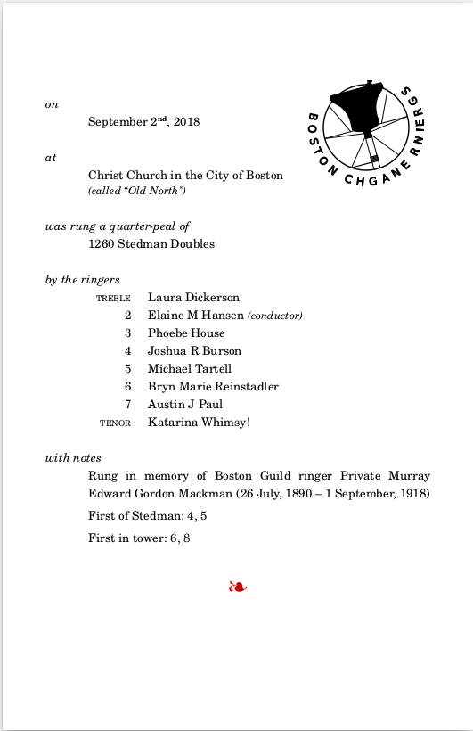

Recent History 2017-present 
2017-2024
2017-2024
Boston Perl Mongers history is divided into three parts, like Gaul.
(Note. This file is in chronological order, most recent at the bottom. The other two are recent top. All start with a table of contents by year.)
For 15 years, MIT IT and Facilities provided user group meeting space on campus for the convenience of MIT staff and other community members who wished to attend.
The facilities were very nice MBA case rooms in the Business & Humanities building E51.
MIT Era spans the file break between Mid History and Recent history.
Tues, Jan 10th, 2017, 7:30 Room E51-376
learningperl6.png
“6 More Things about 6” will cover a combination of features, ideas, and concepts that I find interesting about the new language. I’ll also answer question about the upcoming “Learning Perl 6” book, the Kickstarter campaign for it, and other things you may want to ask.
About the speaker brian d foy is a long time member of the Perl community, a prolific Perl trainer, and writer. In addition to authoring the upcoming Learning Perl 6,† he’s the the author of Mastering Perl, and co-author of Programming Perl, Learning Perl, Intermediate Perl, and Effective Perl Programming. He’s a frequent speaker at Perl conferences. He founded the first Perl user group, the New York Perl mongers, as well as the Perl advocacy nonprofit Perl Mongers. A contributor to Perl documentation and maintainer of several modules on CPAN.
†(Narrator: With the Raku language rename, Learning Raku* is now the title of the book. Also, FWIW, “Six things … about …” was an au courant cultural reference at the time. *)
SLIDES for this talk Perl 6 Advent article by bdf on Object Hashes P6PT Slides for (first) 6 Things about Perl 6 at NY.pm (prequel for above talk) see Brian also as (ex)LearningPerl6->@LearningRaku (twitter.com) and @briandfoy_perl
Twice postponed because Valentines had basically 0 RSVP and Pi(e) Day 3.14 had a Blizzard Watch
I’m a bit of a digital pack-rat, so I will be showing a tool that I developed to help me hoard Tumblr meme posts. As a bonus, just for this talk I wrote something in Perl 6 that does a similar task for XKCD.
(So if you’re looking for ways to capture unstructured (no API) data from the web with Perl, this talk is for you.)
Ricky Morse has been using Perl for various things since the late 90s.
(Deferred from Feb 14th Valentines Day to March 14th Pi(e) Day … and also the latest 2nd Tuesday falls, so two months in a row, BLU.org 3rd Wednesday Linux/Unix meeting fell the day after Boston.PM, twice since not a leap year.)
( 3.14 is Pie Day. We usually have Pizza which is Pie and a Pi joke in itself, so I’ll bring rectangular cookies that are trigonometric in a different way. If someone brings a dessert Pie, that would be OK too. – Bill )
(OK we now have a BLIZZARD WATCH posted by NWS . Odds of Perl meeting Tuesday drops fractionally every hour that stays in effect and more so if elevated to a Warning. As if it wasn’t obvious … Meeting tonight is canceled, speaker and topic postponed to April 11th. Pi Day will be observed online. - Bill )
Celebrity guest Randal L Schwartz, at the home of Uri Guttman “Perl Hunter”.
Join us to see what’s new in the latest Perl. Using slides prepared by brian d foy for an AmsterdamX.pm presentation, we’ll go over the highlights of new features and changes in Perl 5.26, including the potential disruptive change of removing the current directory (.) from the @INC module search path. We’ll supplement the slides with the official Perl Delta (change log) document, and other online sources where more depth is required. The talk will be an open discussion format, with Bill Ricker leading us through the slides, but plenty of opportunity for the audience to ask questions, or offer opinion, and in some cases we’ll try some live demos of the new features.
Attendees will select Lightning Talks from The Perl Conference 2017 playlist. We can’t play all 29 of them unless we ‘gong’ more than half quickly after starting, but at 6 minutes each, we can get through a dozen (unless we choose to discuss and experiment between).
Samples from among the 29 six-minute choices available -
Bill will be our VJ, but the audience will lead.
Damian Conway, “Three Little Words” (or “Why I Love Perl”) (recorded at The 2017 Perl Conference).
Another MST3K YouTube TPC/YAPC screening and discussion
Damian Conway, known for his rapid-paced, wide-ranging, tour-de-force presentations, was the keynote presenter at The Perl Conference, 2017 (formerly known as YAPC::NA). In his keynote he tells “a tale of madness, obsession, and coding extremity,” describing what it took to bring 3 keywords from Perl 6 to Perl 5. A community effort that took three years and 2.8 million lines of code. This is a more extreme example of what some developers are going through to bring Perl 6 functionality to Perl 5.
We will watch his recorded keynote and discuss among ourselves.
Even if you are new to Perl and don’t follow all the technical details, Damian’s highly entertaining presentations are a must see. (Plus, after the talk when we discuss it, we’ll happily answer any questions.)
About the speaker Damian Conway is an author or co-author of numerous Perl books, and a widely sought-after speaker and trainer.
https://www.youtube.com/watch?v=ob6YHpcXmTg
Tonight (As an emergency substitute talk) we will be having
a mini-hackathon on the Config::Std CPAN module that
Boston.pm maintains. We’ll be offering a live demonstration of setting
up continuous integration (CI) using Travis CI and Appveyor, two hosted
CI tools made freely available for open source projects on GitHub. Join
us as we stumble through the process and learn from our mistakes.
Perl has had Test::Harness for decades, with CPANTS
providing distributed Continuous Integration testing of Released CPAN
module distributions for a decade or more. Thank you CPANTS volunteers
for creating a distributed cloud for us :-). Now GitHub is offering
similar capabilities to all the other FLOSS communities via free
integration with freemium cloud Continuous Integration tools Travis-CI
(for Linux) and Appveyor (for Windows). Since we have CPANTS for
release, we can use Travis-ci&Appveyor to test our DEV branch after
check-in. They’ll even test Pull Requests before merge! Any GitHub FLOSS
project can use these, but Perl CPAN projects can make use easily since
we already have a regression testing culture, we won’t need to write the
tests, just enable them.
LIVE Speaker !
Remember, if you get Veterans’ Day Monday off work, Tuesday will feel like Monday.
“Deep Learning with AI::MXNet: Navigating implementation issues”
ABSTRACT This talk will cover lessons learned from a recent experience in getting a deep learning projected started, with little prior experience in AI. All code will use the Perl MXNet API and guide the audience through developing a simple model, which is then built on to perform more complex tasks.
Artificial Intelligence (AI) has for a long time captured the popular imagination. Results from academia and industry have finally started to deliver on some of the long hoped for results: self driving cars, automated medical diagnoses, and written and verbal language processing. These areas are showing advances that were once simply products of fiction writers. The current wave of AI enthusiasm may be attributed to what is called Deep Learning which is a convenient label for relatively new techniques using neural networks. The possibility for increased automation across virtually every industry has resulted in the spinning up of many new startup companies, as well as new projects within existing enterprises, resulting in the need to develop the skills necessary to pursue this new area.
While not the language of production, Perl is used to develop algorithms and demonstrate concepts before they receive fuller treatment. Deep Learning practitioners often begin their deep learning work, correctly, with a review of the literature and research into the fundamentals. Projects then often start confidently with high hopes, built on that conceptual understanding, only to quickly get bogged down in unforeseen, but critically important, issues of implementation.
Adam Russell is a software engineer with OptumLabs’ Center for Applied Data Science (CADS). CADS is tasked with developing prototype applications which implement recent advances in algorithms and technology to address issues of importance to Optum business interests. Most recent projects have been focused on Deep Learning. Adam has a PhD in Computer Science from the University of Massachusetts Lowell, his academic interests involve Computational Geometry and Data Visualization and these explorations, much like the work described in this talk, are all Perl driven. He also teaches, on an adjunct basis, at Wentworth Institute of Technology in Boston.
room reservation failed due to IAP, so we had a social in the hallway.
topic originally scheduled for January
Amsterdam Perl Conference 2017 video screening
Noted Perl personality Ovid (Curtis Poe) has built a Space-exploration on-line role-playing-game called “Tau Station” in Perl. It’s even a business. In this talk, he describes the games industry and how Modern Perl makes building his game fun.
Original Abstract -
“With Tau Station, we’re building a sci-fi universe in a browser. However, in object oriented design, what does the”single responsibility principle” mean when your combat armor serves as armor, a weapon, and medkit?
“And when many different behaviors have long chains of duplicated requirements (for example, do you have enough money to buy a medkit, or refuel your ship, or repair your blaster, or bribe a guard), how do you handle that in an efficient an easy to read manner?
“And how do you avoid god objects when your character in the universe drives almost everything?
“This talk explores some of the techniques we’ve developed for Tau Station to easily model complex behaviors.”
We’ll have our usual community discussion after (or by hitting pause as needed) in lieu of speaker Q&A.
GPS! Randomness with Radiation!
Abstract: Using the lowest amount of custom hardware and pouring Perl over everything as the glue binding it all, we create two minimalistic devices delivering a perfectly tuned network time source (synchronizing with a GPS satellite), and a naturally random entropy source (leveraging a Geiger tube’s measurement of natural background radiation).
We’ll watch (dissect?) two shorter conference videos, with our usual MST3K commentary and rabbit-hole research. Topics are 3 dialects of Function Signatures in recent Perls and infinite precision computation in Perl 6.
August is canceled.
We’ll have a meeting in September; 2nd Tuesday is the 11th – Where is TBD; maybe at MIT, maybe in Waltham. If Waltham, it’ll be near (T) bus and train as well as parking; and I’ll provide Car Pool out and or back for anyone that wants to.
Our Wiki is down. Free provider has pulled the plug. (In copious spare time, Tom and I are looking for right replacement.) So temporarily boston.pm.org DNS points to a 404-ish page :-(
Meantime, our Twitter, Facebook, G+ (ominous music), MeetUp, LinkedIn, and these two Mailing Lists provide redundant communications.
- The Wiki is Back! New hosting thanks to Greg R ’s QualityBox.US , suppliers of wikis and forums to discerning SMBs. Same Boston.PM.org address thanks to Perl.ORG
(Narrator: alas this only lasted through end of 2021)
September 11th: Ricky Morse - Perl 6 and Typesetting Formal Announcements
or, Ringing halfsheets with Perl 6
Meetings resume ! September at the usual place
After ringing a bell for 45 minutes to 3 hours, you kind of want people to know you did it, and what you did it for. Ricky uses Perl 6 to replace a manual process for creating “half-sheets” to post in the Old North ringing room, for tourists to see.
Ricky sensibly doesn’t want to retype or copy-paste what’s already
somewhere on-line, so he uses Perl 6 to pull the data from a database as
XML, and then typeset the half sheets. This is using Perl6, GROFF,
and C6PAN Modules Template::Mustache,
XML::XPath, and HTTP::User Agent.
Commemorative text of a peal rung 
Ricky gave background on the Change Ringing style of bell ringing and also briefly listed various software paths he considered to transform XML to PDF for this print problem.
Slide notes http://pukku.com/bostonpm/2018-09-ringing-halfsheet/
Program https://github.com/pukku/ringing_halfsheets ( link is in the notes above).
We did not watch all the videos or dive into all the reference links … have fun with this rabbit warren of links!
For the October 9 gathering of Boston Perl Mongers we’ll be hosted by MaxMind in Waltham, instead of our usual MIT location. Our speaker will be Mark Fowler.
(Boston.PM is happy to accept this offer of hosting from MaxMind, and would welcome hosting offers from other organizations in Eastern MA. It gives those who live further West or otherwise are unable/unwilling to travel to the city a chance to attend.
“A resource for beginners and advanced Perl users alike, the Perl Advent calendar http://www.perladvent.org/2017/ features humourous stories featuring Santa’s Elves and the fun they have with Perl. This talk will talk about all the exciting things that occurred in (last) year’s calendar. Somewhat akin to twenty four two minute lighting talks, it’ll expose you to a range of topics.”
About the Speaker
Mark Fowler is a manager with experience in running teams developing, maintaining, and improving innovative internet based technologies, currently working for MaxMind, an industry-leading provider of IP intelligence and online fraud detection tools.. He has a strong background in programming and development, speaking at conferences, and writing technical articles. Author/maintainer of 32 modules on CPAN.
( Boston.pm’s Jerrad Pierce was the first Perl Advent interregnum editor after Mark’s inaugural stint. We’ve not been involved in the 2nd interregnum or the Restoration, so it will be very good to hear this! )
SITE: 14 Spring St, Waltham, MA 02451
(For CarFree folks, meeting will be on Express Bus / Bus network and short walk from Commuter Rail (transit map), or you can Carpool with Bill! Free parking across the street.)
Hosted by BLU Boston Linux Unix
Moderator: Greg Rundlett, founder of eQuality Technology
A guided tour of QualityBox, a MediaWiki hosting service
Abstract:
Greg Rundlett, founder of eQuality Technology, has created a hosted software service called QualityBox which is provides the wiki engine (MediaWiki) that drives Wikipedia. Like Wikipedia, QualityBox is instantly usable by the end-user. And like Wikipedia, it includes a huge number of configurations, extensions and customizations that make it supremely useful. Greg will take us on a tour of QualityBox, and the MediaWiki ecosystem to illustrate some of the features and capabilities that are available right “out of the box”.
Featuring: - MediaWiki 1.31 LTS - Visual Editor - ElasticSearch (v5.6.10) - Excellent Mobile support - Modern and traditional layouts - New dashboards - Top to Bottom security upgrades - Free SSL certificates - Subdomain-based wiki farms - And LOTS more.
(Narrator: The BLU and Boston.PM wikis were hosted as the demos on QualityBox. Alas the business model fizzled by the end of 2021. It was nice while it lasted. The experimental multi-tenancy MediaWiki was a cool idea.)
Ricky Morse will review the highlights of several of the Perl community Advent calendars of 2018.
Following up on Mark Fowler’s Perl Advent 2017 review in October, Ricky takes on 3 of Advent calendars of 2018.
We stumbled on a video talk that provides a fast-forward review of how Perl’s OO has evolved over the last 25 years. We’ll give that our MST3K commentary treatment.
Test2 is a replacement for many of the Test modules, which comes with advanced comparison features, and a version of Ruby’s “SPEC” DSL.
Ricky screened Chad Granum’s 2018 Perl Conference talk where he introduces the Test2 suite of modules.
In addition, Ricky already had a bunch of tests written using Test2, which he showed from his iPad.
Hue-Saturation-Luminance for Ack3 with Convert::Color::HSL and Term::ANSIColor
Curious about how to handle different color spaces in Perl?
Bill Ricker will show how he improved RBG palette help for Ack3 using the HSL colorspace model and CPAN module that does HSL<->RGB transform.
Ack uses an module Term::ANSIColor
that uses base-6 colors from 000 to 555 .
ack --help-rgb-colors will display all possible colors. The
palette display was formerly laid-out as convenient for the code loop,
not for the viewer’s comprehension.
Reorganizing it according to a geometric color model makes it easier
to see the various gradients between color coordinates. Bill
Ricker used Convert::Color::HSL
to prototype a new palette-help, as seen in new Ack3
code.
The HSL model is very similar to the HSV model, with subtle distinction between “Luminance” and “Value” in the third, vertical coordinate:

They say only Perl can parse Perl, but Perl can also generate Perl. In “Perl begat Perl”, a preview of a talk Uri will present at this year’s Perl Conference, he will discuss how you can generate Perl inside Perl and then call eval on the code. Uri will explain why you might want to to use this technique, and illustrate it with good and bad examples.
Uri Guttman is a founding member of Boston Perl Mongers, a long time presence in the Perl community, and founder/owner of Stem Systems, a Perl consultancy, and known as “The Perl Hunter,” a recruiter specializing in placing Perl talent.
TPC Video of same talk has abstract -
Have you ever wondered why some CPAN modules actually generate Perl code to be eval’ed? Some of the reasons are simplicity but most often it is for getting faster running code. The key Perl feature used is eval on strings (the dangerous eval, not the safe eval of blocks). Newbies are always warned not to use string eval but this talk will show you why and how to use it for your benefit. Simple and common examples will be shown that anyone can use. Then more complex examples from existing CPAN modules (two of which are by the speaker) will be covered. They use Perl code generation for major speed gains (including 4x in one case).
NOTE: Back to 3rd floor!
Emergency Video MST3K as scheduled speaker rescheduled, real life happens.
(Narrator: This was announced on list, rescheduled a few times, and was never presented. It is included in history since (a) it was announced and (b) it’s neat technology.)
“Jupyter Notebook (formerly IPython Notebooks) is a web-based interactive computational environment for creating Jupyter notebook documents” https://en.wikipedia.org/wiki/Project_Jupyter#Jupyter_Notebook
Adam Russellhas integrated a Perl kernel with the D3.js visualization library for repeatable explainable reusable sharable dataviz.
d3.js, Data Driven Documents, is a JavaScript library for live web graphics based on changing data https://en.wikipedia.org/wiki/D3.js
“How Jupyter Notebooks Will Improve Your Computational Life” “The Jupyter Notebook is a browser-based command shell for interactive computing in several languages” https://wp.sanger.ac.uk/barrettgroup/2016/03/10/how-jupyter-notebooks-will-improve-your-computational-life/
(Both Perl5 and P6=Raku lang kernels for Jupyter Notebooks exist!)
Boston.pm will apply our MST3K interactive discussion style to one or more recent Conference Videos.
Couldn’t make it to the last Perl Conference? In our next meeting (Tuesday, 10/8) we’ll be viewing a keynote presentation from Sawyer X where he looks at what has transpired in the last 20 years, and then takes an honest and critical look at where the Perl 5 language stands today, and where it could go.
how Perl 5.30 (2019) fits in arc of history and a possible future.
but attendees can select a different one from shortlist or elsewhere for our interactive discussion (MST3K) treatment.
With a Monday holiday this week for many, we’ll take a pass on November. (Hug any veterans in your life.)
FEDERICO LUCIFREDI O’Reilly Author, hardware hacker, and product manager at which-ever Linux company his business card says this week
December 10th - 7ish pm - MIT - as usual
Legend has it that you can learn Perl in 2.5 hours — we want to distill the essence of Bash scripting in a similarly short session. Federico will bring slides and a “core” overview of this notoriously hard to master language, come help us figure out what else is missing!
sampling the best of the Perl-ish Advent Calendars of 2019.
LAST MEETING AT MIT - END OF AN ERA
Out of an abundance of caution and not having a speaker anyway, I’m canceling the meeting this month.
I wouldn’t be surprised if April has to be held as a Google Hangout or IRC meeting or something, as MIT may be a closed campus by then.
(And then MIT canceled all non-essential gatherings for the duration.)
We held no virtual meetings during the hard months, and then we often skip summer, so by fall, we could see what Natick FOSS and BLU were doing for virtual meetings.
Boston.PM will try a virtual meeting for September 8th (aka March 192nd ).
Topic: What did you do on your summer vacation? WFH & staycation (with Perl¹)?
Set::Tiny
Email::Stuffer and Text::CXV_XS notesWhere: JITSI
¹ or other compatible, interesting FLOSS too
NOTE – This is as early as 2nd Tuesday can fall and is the day after the long Labor Day Weekend, so it will feel very Monday and not very Tuesday, let alone 2nd Tuesday !
We will use the Jitsi Meet service.
(If you need to hear my rant about why Zoom’s “fixes” are inadequate, ask me off-list.)
Jitsi is a Free/Libre OSS project sponsored by 8x8 (an Atlassian spin-off). It is the freemium base for their added-value corporate meeting & VOIP platform. As FLOSS, it can be self-hosted; they provide a free demo server. We will currently be using the free demo server, but may migrate to a hosted server (where we can set defaults, privileges).
Natick FOSS group has a 4-page Jitsi Help .pdf file, and you can practice beforehand. (Natick meet 1st Thursdays, online, early afternoon) Update to file ^ : Firefox latest versions 78+ support multicast, so are safer than before. Chrome/Chromium/FF78+ all plausible now.
One can use plain web mode, but if you can install the browser plug-in if you like. There are also iOS (iPhone/iPad) and Android apps which work well.
(I will replace this line with the link to the meeting room later)
JITSI scales fine to more people in face-sharing Brady-Bunch / Hollywood Squares mode than you can easily see at once (30ish) and if folks turn off their cameras (same as mikes) when just listening/talking, i.e. when not commenting/presenting, it scales much higher.
(If we later get more folks than will comfortably fit in Jitsi, we can set up a stream to YouTubeLive or some other platform … or upgrade to a proper panelist platform feeding a stream, but the “seminar” quality of Jitsi is fine for our level of anarchy.)
I will routinely mute those not presenting so you’ll usually need to unmute to comment. Hint: Space-bar is push to talk, M is mute/unmute (on phone/tablet it’s the skewmorphic microphone, avoid the handset hangup button!). Shortcuts
Featuring Jerrad Pierce on IO::Pager
News: CPAN announces they’re sunsetting rt.cpan.org since diminishing usage; better support for migrating RT queue to GH is provided!
Suggested topics:
perl.com got hijacked. It’s gotten (mostly) un-hijacked.
brian d foy official
commentary;brian d foy – “Looking forward to Perl 7”, for Oslo Perl Mongers, Streamed 5 days ago https://www.youtube.com/watch?v=TiGxe3wYhD8
FYI, Perl 5.34.0 is releasing this spring; the new Steering Council is (still) (re)considering the proposal for Perl 7.
Syntax::Keyword::Try)isa to core, and chained comparisons
:if ( $x < $y <= $z )... )Paul Evans (“LeoNerd”, PEVANS) - Writing a Perl Core Feature - Part 1 & Part 2.
Summary: “Did you know that you could increase the readability and reliability of your Perl code with one feature? I’m talking about subroutine signatures: the ability to declare what arguments, and in some cases what types of arguments, your functions and methods take”
Based on the blog post at phoenixtrap

Summary: In this presentation, Mojolicious Core Team member Joel Berger will discuss some of the features of the recent Mojolicious 9.0 release and how they can improve your web (and async) applications.
Joel Berger is a Mojolicious Core Team member. He has a Ph.D. in Instrumentation Physics from the University of Illinois at Chicago and works at ServerCentral Turing Group. He lives in Chicago with his wife and 2 year old son.
---------- Forwarded message ---------
From: Joel Berger
Date: Wed, Apr 14, 2021 at 2:52 PM
Subject: Re: Tuesday - Tech meeting - Mojo 9 point OH!
BTW in looking to open a tracking ticket to
construct a guide for Mojo::DOM it seems we already have
one! <https://github.com/mojolicious/mojo/issues/1110> If anyone is
looking for a good way to contribute to Mojo (or just to open source)
without coding that would be a great way to do it!(My own comment is that an easily taught/comprehended Async framework is something i’ve been looking for since reading Dijkstra, Hoare, and ADA 35+ years ago. Rendezvous wasn’t it. – Bill)
Our first Joint Virtual Meeting
Boston.PM is invited to join Charlotte PM’s virtual meeting this Wednesday night, April 28th, 6PM EDT.
Command Line Adventures in Perl - 2021 Edition
Command line interfaces are an important part of managing many modern applications, and in 2021, there are no shortage of options for building them in Perl. In this talk, Jason will summarize many of the current options available, with an overview of the pros and cons of each. From there, he will explore how to construct a complex command line interface using CLI::Osprey, based on his recent experiences rebuilding the Dancer2 CLI.
Jason Crome is a longtime veteran of Perl and its community, is the TPF Grants Committee Secretary, and a member of the Dancer Core Team. He’s currently a contractor at Bank of America building and maintaining payment processing systems with Perl and C++.
Once again, Boston PM will join forces with Charlotte PM for a virtual meeting.
3 Not-So-Wise Men: Recent Misadventures …in which Brian Wisti, Gizmo Mathboy, and Yanick recount their recent (mis-)adventures with Perl, Markdown, JavaScript, and more to build blogs, games, Twitter posts, and other tools that are part of their everyday lives.
You’ll laugh, you’ll cry, you’ll question your life choices before all is said and done. There is something for everyone here, and it will be truly fun and entertaining
Wed, May 26, 2021, 6:00 PM EDT
Boston.pm and Charlotte.PM invited to BLU.org’s virtual meeting
Description: Jon “maddog” Hall discusses what customers really look for Details at http://blu.org/cgi-bin/calendar/2021-jun Organizer: Boston Linux + UNIX
(If you don’t recognize the name … Jon is a pundit and sometimes board member on things Linux and FLOSS; he was the manager at DEC who was the first to give Linus some hardware for porting Linux. We can thank him that it’s portable !)
Boston.PM is invited to again join Charlotte PM’s virtual meeting
Rob “CmdrTaco” Malda talks Slashdot, Perl, moderation, and more!
Hosted by Jason C. & Charlotte Perl Mongers
Join us on June 30th for a special event featuring Rob “CmdrTaco” Malda, founder of Slashdot, as he talks about the quirkiness of Perl that led them to build Slashcode using our favorite language, the challenges of scaling Slashdot in the early days, and how they built up a system to deal with bad actors. We will leave time for Q&A at the end, but feel free to send your questions in advance of the talk.
Rob Malda, aka CmdrTaco, founded Slashdot in his dorm room at Hope College in the late 1990s, and with that, broke new ground in news aggregation and social content moderation. He’s also the host of Geeks in Space, and a a maker of wooden pens.
Thanks to Knowmad (https://knowmad.com) for sponsoring our Zoom presence for this meeting, and to Boston.pm for cohosting the meeting with us. (And thanks to Charlotte PM for arranging this and inviting us!)
NOTE: Our speaker has asked that you leave your cameras on for this event. Also, he has a hard stop at 7:30, so please be prompt. There will be time for socializing after the talk. Look forward to seeing you all!
(Historical note: SlashDot was - still is! - an early Social Media website; it’s platform SlashCode was Perl. Boston.PM’s founder Chris “Pudge” Nandor was an early employee after it got investment.)
Noted other meetings Calendar
Wednesday, August 11, 2021 - Github Actions —
Purdue Perl Mongers (HackLafayette)
> Derrick will introduce us to GitHub Actions, which help you
automate your projects TW MU
MU
Wednesday, August 18, 2021 at 06:30 pm Boston Linux Unix (BLU.org) - Rocky Linux
Rocky Linux - Overview of the official release of Rocky Linux Rocky Linux is a community enterprise operating system designed to be 100% bug-for-bug compatible with Red Hat Enterprise Linux (RHEL), now that CentOS has shifted direction. The first release of Rocky Linux is now available. Our guests provide an overview of the new release, and discuss both installing a new Rocky server and upgrading/migrating an existing CentOS server to Rocky. http://blu.org/cgi-bin/calendar/2021-aug
Preliminary topic description - Everyone has a way for setting up a new workstation, account on a server, etc. Open Mic / Round-table discussion - what you do and why, so that others may learn.
No Boston.PM 2d Tuesday – this month 2d Tuesday and 3d Wednesday are adjacent.
Boston.PM is invited to join BLU.org on 3d Wednesday, as I’ll be giving the annual Crypto News & History briefing. BLU meeting notes
Why you should take a good look at Flutter for all platforms!
Flutter has come a long ways since its was first introduced a few years ago. Yes, even though Google is still in the driver’s seat for Flutter and Dart development, more and more of the contributions are coming from the community.
Google is highly committed to continuing to make Flutter the go-to SDK for user interfaces of all kinds. Of course it still does Mobile well (ios/android/fuchsia), but recently, major releases for Flutter on Web, Flutter on Desktop (linux, windows, macos), and Dart on every platform (including compiling go-like to a single binary with everything included) have continued to please the crowds.
Many large organizations have adopted Flutter, and some app-store apps have had literally millions of downloads.
I’ll be talking about the Past, Present, and Future of Flutter and Dart.
Topics covered:
Where - Online event hosted by Charlotte.PM
When - Wed, Aug 25, 2021, 6:00 PM ET
(This repeated for BLU in Feb 2022 which will have archived video and slides.)
Since Charlotte PM’s regular meeting night is Thanksgiving ±1, they took off this November.
Boston.pm and Charlotte.PM were both invited to BLU.org’s talk.
Wednesday, November 17, 2021 from 6:30 pm to 9:00 pm
Location - Online at Jitsi
Presenters - Neha Ojha , Project Technical Lead for the Ceph RADOS subsystem , Red Hat Software - nojha redhat com
A deep dive into Ceph (which is a distributed storage FLOSS project)
Abstract
What is Ceph? How is it different?
Neha discusses basic Ceph architecture, including details about RADOS, RGW, RBD, and CephFS. She also discusses Ceph’s management plane and details about the Ceph community and ecosystem.
invited to BLU.org again, periodic hardware build update
BLU notes “Budget Build Redux: Building a Box on a Budget with the AMD Ryzen 5600Gl”
“Shankar Viswanathan gives a technical overview of the newly released AMD Ryzen 4 series CPU; Kurt reviews the earlier Budget Build system discussed previously at the August 2020 BLU meeting, based on AMD’s Ryzen 3 CPU; and Brian DeLacey discusses his newest Budget Build system, based on the new AMD Ryzen 4 CPU.”
(This is the boilerplate as used fall 2020 - spring 2022. Current boilerplate is below announced schedule on homepage.)
Meetings hosted by Boston.PM are in meet.Jit.si and on 2d Tuesday.
Meetings hosted by Charlotte.PM are in Zoom and on Last Wednesdays.
Meetings hosted by Boston Linux Unix (http://blu.org) are in Jitsi and on 3d Wednesday.
(If you need to hear my rant about why Zoom’s “fixes” are inadequate, ask me off-list.) Jitsi is a Free/Libre OSS project sponsored by 8x8 (an Atlassian spin-off). It is the freemium base for their added-value corporate meeting & VOIP platform. As FLOSS, it can be self-hosted; they provide a free demo server. We will currently be using the free demo server, but may migrate to a hosted server (where we can set defaults, privileges). Natick FOSS group has a 4-page Jitsi Help .pdf file, and you can practice beforehand. (They meet 1st Thursdays, online, early afternoon.) Update to file ^ : Firefox latest versions 78+ support multicast, so are safer than before. Chrome/Chromium/FF78+ all plausible now.
One can use plain web mode, but you can install the browser plug-in if you like (recommended if sharing slides or terminal). There are also iOS (iPhone/iPad) and Android apps which work well.
JITSI keyboard shortcuts - https://jitsi.github.io/handbook/docs/user-guide/keyboard-shortcuts
JITSI scales fine to more people in face-sharing Brady-Bunch / Hollywood Squares mode than you can easily see at once (30ish) and if folks turn off their cameras when just listening/talking, i.e. when not commenting/presenting, it scales much higher. (If we later get more folks than will comfortably fit in Jitsi, we can set up a stream to YouTubeLive or some other platform … or upgrade to a proper panelist platform feeding a stream, but the “seminar” quality of Jitsi is fine for our level of anarchy.)
I will routinely mute those not presenting so you’ll usually need to unmute to comment. Hint: Space-bar is push to talk, M is mute/unmute (on phone/tablet it’s the skeuomorphic microphone, avoid the handset hangup button!).
As now seen on Perl Weekly
newsletter Perl weekly  and their Events Calendar - which
you can import via the live iCal calendar – at
least in months that i plan ahead (not this month).
and their Events Calendar - which
you can import via the live iCal calendar – at
least in months that i plan ahead (not this month).
Using a variation Dallas.pm’s “run this Perl command to get the URL” security indirection this month. (Designing it to work in any TZ 364 days of the year is tricky …) Run this command on day of a Boston.PM meeting to get the URL. (If you don’t have SSH to a VM on your iPhone, DM me or email me. As shown here, the result goes out in the email but not on the more modern Social Medias.)
perl -MDigest::SHA=sha1_hex -MPOSIX=strftime -le 'print strftime "%Y/%m/%d week %U", localtime; $date=strftime "Y%Y W%U", localtime; print $date; print "https://meet.jit.si/BostonPM-".sha1_hex("BostonPM".$date);'
2022/01/11 week 02
Y2022 W02
https://meet.jit.si/BostonPM-53d228e2ce1c71d05d0c3673096b1fcf874bcef2With special guest appearance of Boston.pm member emeritus Federico Lucifredi
In 2015, Mark Gardner developed a caching subclass of
LWP::UserAgent. This month, he is going to
talk about his journey in converting that to a plugin using
perlancar’s HTTP::Tiny::Plugin.
Mark Gardner is a professional Perl developer with over twenty-five years experience in various industries including pharmaceuticals, e-commerce, and web hosting. For the past year he’s been writing weekly at phoenixtrap.com about Perl-related topics, helping other developers engineer modern, disciplined applications with confidence.
“continuation of my ‘let me make sure I can entertain myself when I’m 90’ series.”
Ricky Morse
Ricky has previously shown us Perl scripts to make offline backups of various media he’d like to see again (without relying on the continued solvency of Archive.org). This will be another variation.
In her quest for more-readable code, D Ruth Holloway has been working on some DBIx::Class Dancer2 plugins for smoother, more semantically-friendly database searches. As a preview to her TPRC::Houston talk in June, come see these modules, and learn how to use them to make your own database queries faster, smarter, and easier to read.
(This was a Preview of Conference Talk re-titled “The Database Dance - DBIX and Dancer treachery to increase performance”, which has following abstract.)
Writing web applications with DBIx::Class and Dancer2 is super-easy. Learning how to make them efficient takes a little longer. Come see some of the things that Ruth has learned—and created—that make these apps faster and easier to maintain.
Writing inefficient applications is startlingly easy to do; some of my early Dancer2 work shows it! In this talk, we’ll discuss ways to structure queries and code to speed things up, and show some of the tools that are available for Dancer2 and DBIx::Class that make maintaining these systems just a bit easier.
Ruth has been writing Perl for 21 years, and attending Perl conferences for the last ten years, speaking at all but one of the in-person conferences. She is a big fan of DBIx::Class, Dancer2, and Agile programming without all the ceremonies. Ruth is a wife, writer, cook, autoharpist, and mommy to the cutest dog you will ever meet.
Bill Ricker, inspired by Ricky’s talk on archival
web scraping last month, revisits the Twitter::API.
One script is a daemon used to automatically retweet useful announcements posted to a monitored Twitter account. The other will archive a Twitter thread in text format (and can safely be re-run when the tread gets longer). It avoids depending on a 3rd party service, which use tracking, ads, and might disappear, to host the archived thread.
(My sample script is quite tuned to the thread I wished to archive, as it heuristically extracts proper nouns.)
(May appear on Charlotte PM YouTube eventually.)
https://en.wikipedia.org/wiki/D._Richard_Hipp
“SQLite is an SQL database engine that can be used in applications as a library for quick read-write operations. Unlike other database management systems, SQLite is not a client-server database designed to run in a data center. D. Richard Hipp is the architect and primary author of SQLite and the Fossil SCM.” - S E Daily
CoRecursive podcast #066 appears to be similar content for those who missed it.
SeaFile and LibreOffice Online together provide most of the functionality of Google Docs BLU
A group discussion of the latest perldelta
- which prepares for October’s future of Perl OO.
We reviewed
perldeltaHighlights
try + catch + finally +
deferuse v5.36 is (almost) sufficient boilerplate (almost =
new experimentals need use )builtin:: Experimental namespaceOther Mentions
A good discussion was had but i didn’t take notes.
Randal (Merlyn) , Dan (swagg boi), Jerrad, Bill.
Writing backends doesn’t have to be a pain in, well, there too.
Yanick will shared how he’s building the backend of smol – a site showcasing painted miniatures – leveraging sveltekit, svelte-query, openapi and JSON:API to achieve maximal self-documentation and consistency with as little boilerplate as possible. We’ll see how the backend endpoints are built, how they can be documented as painlessly as possible, and how they can be plugged in on the fronting web application with minimal effort and no code duplication.
(warning: presentation contains no Perl. But there will be a healthy helping of TIMTOWTDI)
Yanick has been using Perl for, uh, let’s go for “a while”. Erstwhile member of the core Dancer team, past co-editor of the Perl Weekly, ex-contributor to the Perl Review, he has 103 distributions to his name on CPAN, which is frankly a tad excessive. He works at Infinity Interactive.
Yanick Champoux shares: «Slides are at https://techblog.babyl.ca/opus/talks/smol-backend/#/.»
match::smart,
match::simple - Toby Inkster (live)With P5P actively moving forward from deprecation to Warning and
eventual removal of the v5.10 SmartMatch ~~ operator – for
good reason, it was underspecified, nondeterministic, and outright
dangerious – there’s a question for those who found a subset of its
capabilities useful. Prolific module author Toby Inkster provides a
safe, deterministic subset of smart-match in match-simple
distribution which provides match::simple
and match::smart
with optional XS
accelerator.
(with apologies to anyone who has other plans that 💘 evening. this is the risk of 2d Tuesday scheduling.)
Toby Inkster is a consultant for The Perl Shop. He has been working as a software developer for over 20 years, focusing on databases, the Web, and the places where they overlap. Toby has contributed to popular Perl open source libraries such as the light-weight object-oriented programming tool Moo, as well as being the lead developer of Type::Tiny. He has an interest in the Semantic Web was an invited expert to the W3C RDFa Working Group. He also enjoys cooking and likes cats.
match::simple and match::smart are
survivable substitutes for the deprecated ~~ smartmatch
operator, either as a fake operator or as a callable routine renamed to
caller’s convenience. The ‘simple’ variant has predictable semantics;
the ‘smart’ variant emulates (nearly) the full inconceivable complexity
of the deprecated ~~, which provide a survival path for
some code.
use v5.10;
use match::simple;
if ( $this |M| $that ) {
say "$this matches $that";
}When asked if he also provided a substitute for the
given ... when ... keywords, he replied not currently
(syntax module he’d used has been deprecated), but it’s not hard to do,
e.g.:

In discussion after, Jerrad discussed CLI utilities
csv-grep, csv-munge-row, etc from App::CSVUtils
We’ll have Curtis “Ovid” Poe on the
strategy of Corinna project (by the magic of tape delay) and
Paul “PEVANS/LeoNerd”
Evans, Perl Steering Committe and
Object::Pad implementor, LIVE for
the practicalities and Q&A.
Last summer, Ovid posted exciting news -
“For #perl devs wondering how the Corinna #oop project is going, @cpan_pevans is now working on stage 1 of the accepted portion of the RFC. I’ve put that in the repo so you can follow along”
@OvidPerl2022-08-18
Just recently in mid February 2023, Ovid and Paul again shared
exciting news: P5P’s upcoming development release Perl 5.37.9
(alpha/beta for 5.40.0) will contain
use feature 'class';
It has been merged.
Ovid is the architect and Paul is the lead developer for adding a new object-oriented system called Corinna† (formerly & confusingly “Cor” into Perl 5 Core. They’ve had an open community process to develop an RFC or proposal and prototype, but until recently, without commitment for the Perl 5 Porters (P5P) to actually implement it in Perl 5. Over the summer, P5P have approved the initial Stage 1 integration into Perl Core. While we’ve had 20+ years of new OO packages for Perl5 since 5.0, this is the first actual (as opposed to proposed) overhaul of the core OO system in Perl 5.
PEVANS’s non-Core, prototype is Object::Pad, which can be conditionally imported in compatibility mode via Feature::Compat::Class.
Ovid’s recent writing on Corinna are on his blog.
The Corinna project has a wiki and the RFC that proposed adding Corinna to Perl 5 Core, and the P5P-accepted Stage 1 Minimal Viable Product RFC. His 2021 editorial explains the difference between Moose (et al), Stevan Little’s Moxie, and Corinna.
Damian Conway posted an exultation for the (January 2022) P5P approval of the Stage 1 MVP RFC but i can’t find it again. His previous writings endorsing the project are
† Corinna is a classical allusion in connection to Curtis’s pseudonym Ovid, which explains the classical (and otherwise potentially NSFW) image on the MVP RFC tweet.
attending
Ovid Cor Video (2021) FOSDEM - purpose and design 2 years ago (alternative somewhat more recent 2022 video is only slightly different but has audio dropouts )
To get the latest Dev Perl (before 5.38.0 arrives in May),
perlbrew install perl-blead .
5.37.9 perldelta
giving use feature 'class';. perlclass
perlclassguts
Object::Pad
for prototypical moving target.
Feature::Compat::Class
for stable version usable in older Perls (5.18+).
Struct::Dumb
automatically uses feature 'class'; at Perl 5.37.9 and
above. Struct::Dumb is already used in a number of
modules.
MP3::Tag & Syntax::Keyword::Try
etc to make playable audio archives with legible titlesIn pre-meeting Jarred discussed SIGBlovik: The Association for Computational Heresy, a parody computer science special-interest group, which has paper and video proceedings, in particular GradIEEEnt half decent: The hidden power of imprecise lines. And Randal previewed the release of Dart 3.0/Flutter 3.10 later this week.
Since I (Bill) failed to cancel the meeting or line up something better, we dove into my Backup Topic.
MP3::Tag & Syntax::Keyword::Try etc to
make playable audio archives with legible titlesThis script (Tidy html) (mp3info.pl (raw)) exists to
(a) scratch an immediate itch and (b) experiment with a few modules. No
claim is made to best usage of any of these features! The Itch was
scratched, and pudding was proofed.
The Itch was that in moving old podcast files off a modest M.2 SSD to archival spinning rust drive (which is normally kept Read-only mounted for safety), I did not want to rely on Rhythmbox or other music/pod player being sane about browsing/playing a read-only drive where it couldn’t mark things PLAYED. I did need to move most of my older mp3, ogg, etc collection that wasn’t “in queue” to larger passive storage to make space. But i didn’t want to lose the ability to search by track title etc, which usually aren’t fully encoded in filenames. As i expected, there’s a CPAN module for accessing mp3 etc meta-data tags. So it should be trivial to recursively write HTML indices for directories containing MP3s, with links that will play a file, right?
(more commentary is in the linked file.)
A proposed July meeting on Async Graphics didn’t happen because RealLife™ intervened.
(I don’t have notes on what Perl News was discussed)
The most Perl-compatible RE engine remains Perl. Wikipedia has a two-part table of features.
Randal “Merlyn” Schwartz reports that he’s naturally a guest on the newly re-reborn Floss Weekly show, now hosted via HackaDay.
RSS #765 as seen on Fediverse → Hackaday
FLOSS Weekly Episode 765: That Ship Sailed… and Sank - This week Jonathan Bennett and Aaron Newcomb talk with Randal Schwartz, the longest running host of FLOSS Weekly, Perl’s biggest cheerleader, and now Dart and Flutter expert. What’s new with Randal since his last FLOSS Weekly episode in May 2020? Why should you look at Dart and Flutter? And how do you avoid becoming a security martyr?) …
that missed 30 miles south, alas
sorry, Bill couldn’t.
While I was able to chase the Eclipse, I didn’t get caught in traffic, so surprise, meeting held.
The topic is Dave Cross’s recent CPAN upload Amazon::Sites
0.1.6
that makes good use of the Ovid=Curtis and PEVANS=Leonerd’s new
experimental built-in feature class
syntax (via the compatible wrapper Feature::Compat::Class)
and signatures to make a real-world useful CPAN ojbect
using latest Perl features. Dave Cross got some help in FB “The Perl
Community” :
Dave Cross
I released a new CPAN module calledAmazon::Sites. It usesFeature::Compat::Classand subroutine signatures. And CPAN testers tells me that it is failing to compile on Perl 5.24. It looks like the failure is because of my use of signatures - but they were introduced in Perl 5.20, so I can’t see what the problem is.
Leon Timmermans
Yeah, if you want to use signatures inObject::Padmethods you need 5.26. This issue is not solvable as earlier perls don’t provide the underlaying primitives needed to implement this.
Exposed compatibility issue in CPAN PAUSE
Dave Cross
More about theAmazon::Sitesmodule I was asking for help with recently.
https://perlhacks.com/2024/03/amazon-links-and-buttons/
Joshua S. Day
@ Dave Cross I notice that you have a class inside a package by the same name. Is there a reason the whole file isn’t just a class?
Dave Cross Author Admin
Joshua S. Day It’s because thePAUSEindexer hasn’t kept up with the new OO syntax and doesn’t (yet) recognise the “class” keyword as introducing a package. See https://github.com/andk/pause/issues/436 … My first attempt at uploading the module failed for this reason. I got email from Neil Bowers explaining the problem and he raised the ticket above. I’m not expecting anything to change until after the Perl Toolchain Summit next month
It’s a very simple set of 2 classes (a collection class and a
single-thing instances class) that solves a real problem without needing
features that aren’t in the experimental core feature class
yet.
Fediverse (Mastodon etc) has #perl
activity. A delightful not-just-a-JAPH showed up today.
Definitely don’t run this random #perl code
my@a=sub{my@a=@_;
map{(-10, -12, 86, 56, -82, -5, -82, 1, 73, 54, -13, -70)[$_]+$a[$_]} 0..11
}->((unpack("C*", 'rm -rf')) x 2);my@w=(0x64, 0x61, 0x79);
print eval "'" . pack("C*", @a) . pack("C*", @w) . "\n'";yes it looks scary, but that’s just raw characters being reprocessed to pring something friendly.
This reminded Randal of a JAPH he
perpetrated a long time ago, the
oh, turtleneck Phrase Jar!, which abused tr to
transpose an anagram rather than transliterate.
And we of course compared our Eclipse experiences
the prior day. I (Bill) opted for 97% in Mom’s driveway — celebrating
memory of her taking me to Grandfather’s for Eclipse of 1963 — and
concentrated on the experience rather than photography but got a few
photos. I got 140 minutes between 1st and 4th contact. The 3%
Maximum period was perhaps longer than Totality for those there, and was
differently fascinating; the remnant sliver seemingly rotated
around the shadow as the shadow slowly shifted across
the sun’s disk from pseudo-2nd-contact to pseudo-3rd-contact. NASA
posted an image showing this from Washington
DC. 
NOAA as usual posted an animation of the eclipse Penumbra (the broader partial eclipse shadow) crossing the continent hires Y-T Friends of Nasa has some low-orbit close-ups too, as does space.com.
Space(.)com pub’d a NASA image shot from ISS that’s a “closeup” of Quebec + Maine in shadow (Penumbra; Totality or Umbra is the thin densest core).
| E | |
 |
|
| N | |
«Astronauts on the International Space Station snapped this photo of the moon’s shadow on covering portions of the Canadian provinces of Quebec and New Brunswick and the American state of Maine from its orbit 261 miles above Earth during the April 8,2024 total solar eclipse. > (Image credit: NASA)»
(pov is looking South East over Quebec to Maritimes and New England; PEI&NS/NB upper-left, Cape Cod is at the edge of the clouds to right. Gaspé peninsula center left is where I enjoyed the Eclipse of 1972. When the Gaspé is the most populous spot for an Eclipse … )
Attending: Bill, Ricky, Randal?, Chuba.
Stringy Eval redux  - Paul Cochrane Mastodon/Fediverse/AP
⇒ Avoiding
stringy eval in Perl
- Paul Cochrane Mastodon/Fediverse/AP
⇒ Avoiding
stringy eval in Perl
Why do 6-digit confirmation codes (2FA etc) seem to ^always^ have patterns?
Poker::Eval
help? Not really.String::LCSS
to find sequences, and plain Perl for finding pairs/threescodes-poker.pl152595 treble but not sequence or repetition); for mnemonic
value in a 2FA confirm code, must be a sequence in the random digits as
given. So 345655 is sequence of four, pair 5, repetition of
5, but 345556 is only sequence of 3 with treble 5.$ perl codes-poker.pl 2>&1 | less
1000
123455 = rep:2:55,seq:5:12345,pair ;
123123 = rep:3:123,seq:3:123,pair,pair,pair ;
123456 = seq:6:123456 ;
246890 = seq:3:890 ;
246870 = seq:4:2468 ;
152595 = three ;
345655 = rep:2:55,seq:4:3456,three ;
345556 = rep:3:555,seq:3:345,three ;
# first random hand:
019227 = rep:2:22,seq:2:01,pair ;
…
597386 = nothing ;
…
402701 = seq:2:01,pair ;
105743 = seq:2:10 ;
200816 = rep:2:00,pair ;
527139 = seq:2:13 ;
405750 = seq:2:57,pair,pair ;
15 nothings; 0.015Geo::Coder::OpenCageGeo::Coder::Many::OpenCage
Geo::Coder::ManyGeo::What3Words,
as that requires agreeing to would-be monopolist API key TOS (if I see
any reason to even use w3w).